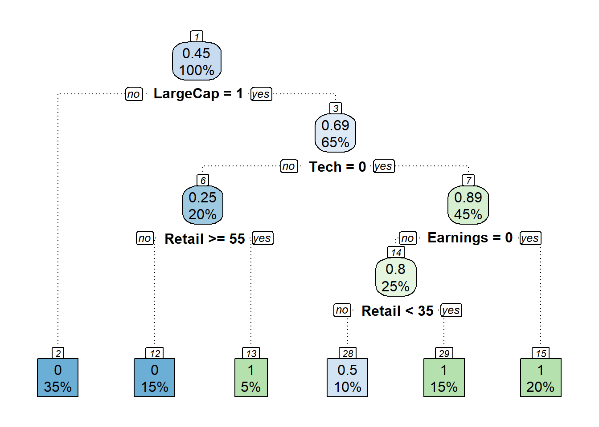
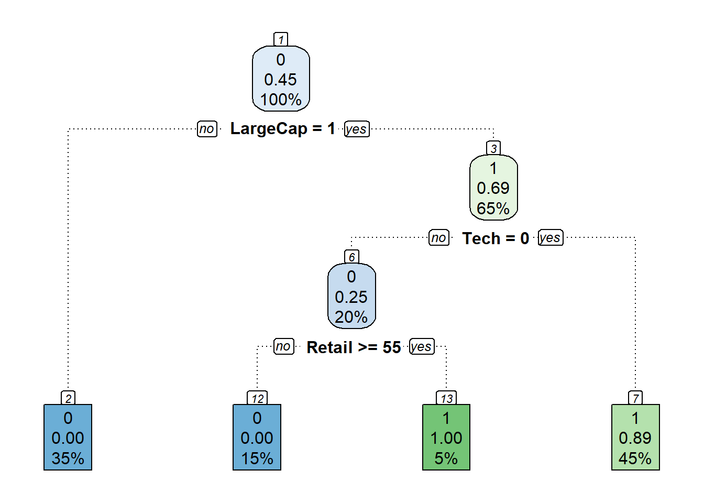
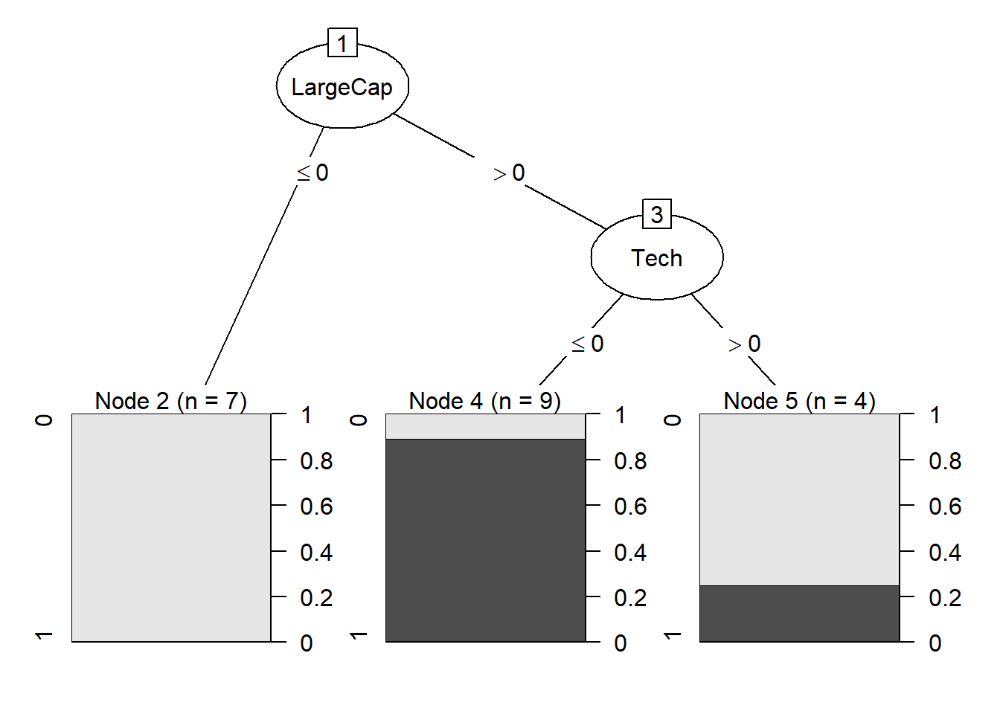
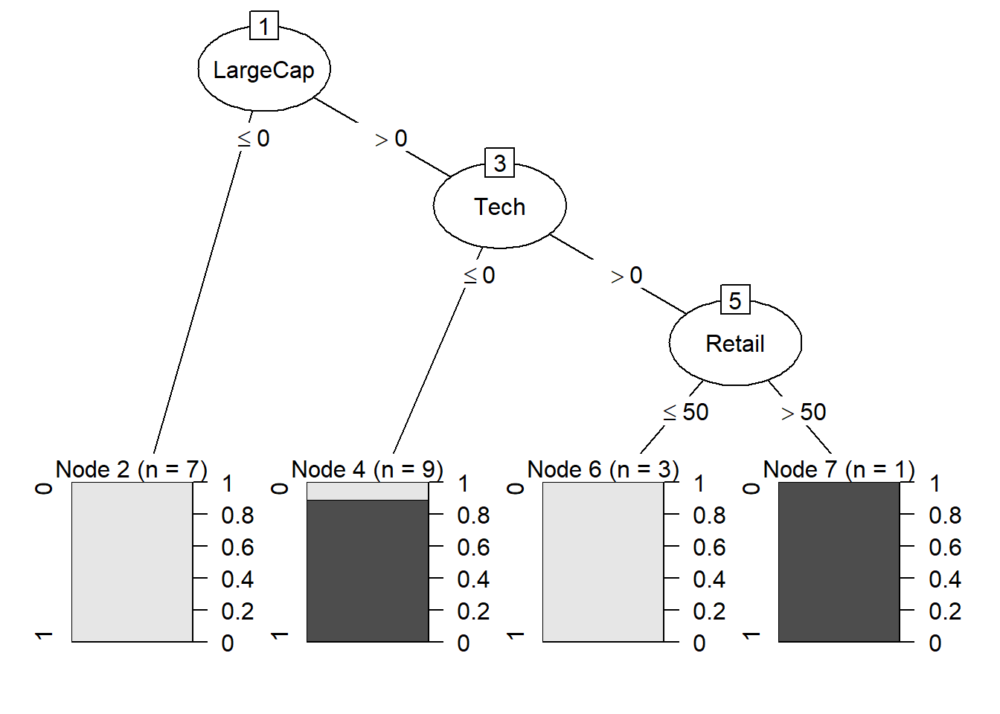
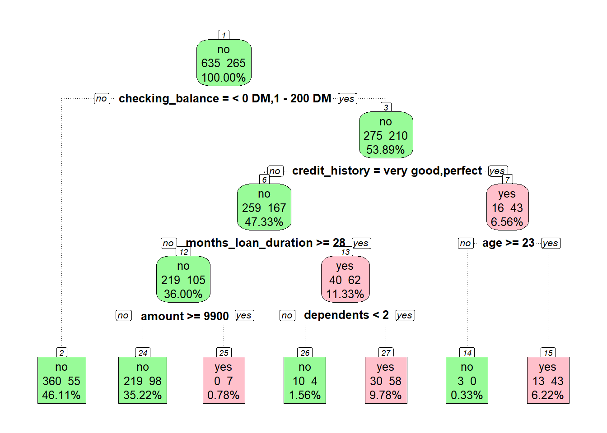

my_libraries <- c("C50", "gmodels", "tidyverse", "openxlsx",
"rattle", "rpart", "rpart.plot")
lapply(my_libraries, library, character.only = TRUE)Contents
- Train (and graph) dividend payer with rpart(), rpart.plot and C5.0
- Loan default train
- Loan default prediction
- Adding penalty matrix to make false negatives costly
- Trees are random but not too fragile
To write a PQ set for decision trees, I experimented below. First the libraries:
Predicting dividend
GARP’s motivating example is a super simple (n = 20) dataset of public companies the either pay or do not pay a Dividend. The my20firms dataframe (you can see) is slightly altered to achieve a tree that I liked better for purposes of a practice question:
# my20firms <- garp_data
# my20firms$Dividend[1] <- 0
# my20firms$Dividend[9] <- 0
# my20firms$Dividend[12] <- 1
# my20firms$Dividend[13] <- 0
# my20firms$Dividend[15] <- 0
# colnames(my20firms)[colnames(my20firms) == "Retail_investor"] <- "Retail"
# colnames(my20firms)[colnames(my20firms) == "Large_cap"] <- "LargeCap"
# write.xlsx(my20firms, file = "dividendExampleModified_v3.xlsx")
# my20firms <- read.xlsx("dividendExampleModified_v3.xlsx")
# saveRDS(my20firms, file = "my20firms-rds.RDS")
my20firms <- readRDS("my20firms-rds.RDS")
my20firms Dividend Earnings LargeCap Retail Tech
1 0 0 1 40 1
2 1 1 1 30 0
3 1 1 1 20 0
4 0 0 0 80 1
5 1 0 1 20 0
6 0 1 0 30 1
7 0 1 0 40 0
8 1 0 1 60 0
9 0 1 1 20 1
10 0 1 1 40 0
11 0 0 0 20 1
12 1 0 1 70 0
13 0 1 0 30 1
14 1 0 1 70 0
15 0 0 1 50 1
16 1 0 1 60 1
17 1 1 1 30 0
18 0 1 0 30 1
19 0 0 0 40 0
20 1 1 1 50 0fit2 <- rpart(Dividend ~ ., data = my20firms,
parms = list(split = "gini"),
control = rpart.control(minsplit = 1,
minbucket = 1,
maxdepth = 4))
# summary(fit2) printout is too long
print(fit2)n= 20
node), split, n, deviance, yval
* denotes terminal node
1) root 20 4.9500000 0.4500000
2) LargeCap< 0.5 7 0.0000000 0.0000000 *
3) LargeCap>=0.5 13 2.7692310 0.6923077
6) Tech>=0.5 4 0.7500000 0.2500000
12) Retail< 55 3 0.0000000 0.0000000 *
13) Retail>=55 1 0.0000000 1.0000000 *
7) Tech< 0.5 9 0.8888889 0.8888889
14) Earnings>=0.5 5 0.8000000 0.8000000
28) Retail>=35 2 0.5000000 0.5000000 *
29) Retail< 35 3 0.0000000 1.0000000 *
15) Earnings< 0.5 4 0.0000000 1.0000000 *printcp(fit2)
Regression tree:
rpart(formula = Dividend ~ ., data = my20firms, parms = list(split = "gini"),
control = rpart.control(minsplit = 1, minbucket = 1, maxdepth = 4))
Variables actually used in tree construction:
[1] Earnings LargeCap Retail Tech
Root node error: 4.95/20 = 0.2475
n= 20
CP nsplit rel error xerror xstd
1 0.440559 0 1.00000 1.11610 0.056479
2 0.228352 1 0.55944 1.12013 0.298518
3 0.151515 2 0.33109 1.04063 0.309021
4 0.039282 3 0.17957 0.81948 0.360160
5 0.010000 5 0.10101 0.80808 0.361385rpart.plot(fit2, yesno = 2, left=FALSE, type=2, branch.lty = 3, nn= TRUE,
box.palette = "BuGn", leaf.round=0)
# converting the target to factor
my20firms$Dividend <- as_factor(my20firms$Dividend)
fit3 <- rpart(Dividend ~ ., data = my20firms,
parms = list(split = "gini"),
control = rpart.control(minsplit = 1,
minbucket = 1,
maxdepth = 4))
print(fit3)n= 20
node), split, n, loss, yval, (yprob)
* denotes terminal node
1) root 20 9 0 (0.5500000 0.4500000)
2) LargeCap< 0.5 7 0 0 (1.0000000 0.0000000) *
3) LargeCap>=0.5 13 4 1 (0.3076923 0.6923077)
6) Tech>=0.5 4 1 0 (0.7500000 0.2500000)
12) Retail< 55 3 0 0 (1.0000000 0.0000000) *
13) Retail>=55 1 0 1 (0.0000000 1.0000000) *
7) Tech< 0.5 9 1 1 (0.1111111 0.8888889) *rpart.plot(fit3, yesno = 2, left=FALSE, type=2, branch.lty = 3, nn= TRUE,
box.palette = "BuGn", leaf.round=0)
I had to refresh my knowledge of decision trees, and for that I depended on the awesome book () that I will review in the future (almost done!). He uses C5.0 algorithm (per the C50 package) and I just wanted to see its defaults:
tree_c5 <- C5.0(Dividend ~ ., data = my20firms)
plot(tree_c5)
# set MinCases = 1
tree_c5_v2 <- C5.0(Dividend ~ .,
control = C5.0Control(minCases = 1),
data = my20firms)
plot(tree_c5_v2)
Loan default examples
Now I will switch datasets, and use the same loan default dataset used in the book. But I will use the more familiar rpart() function to train the tree. The result is similar but not identical (and please not the difference is not due to sampling varation: my test sample is the same).
set.seed(9829)
train_sample <- sample(1000, 900)
credit <- read.csv("credit.csv", stringsAsFactors = TRUE)
# split the data frames
credit_train <- credit[train_sample, ]
credit_test <- credit[-train_sample, ]
credit_train$credit_history <- credit_train$credit_history |>
fct_relevel("critical", "poor", "good", "very good", "perfect")
tree_credit_train <- rpart(default ~ ., data = credit_train,
parms = list(split = "gini"),
control = rpart.control(minsplit = 1,
minbucket = 1,
maxdepth = 4))
rpart.plot(tree_credit_train, yesno = 2, left=FALSE, type=2, branch.lty = 3, nn= TRUE,
box.palette = c("palegreen", "pink"), leaf.round=0, extra = 101, digits = 4)
print(tree_credit_train)n= 900
node), split, n, loss, yval, (yprob)
* denotes terminal node
1) root 900 265 no (0.7055556 0.2944444)
2) checking_balance=> 200 DM,unknown 415 55 no (0.8674699 0.1325301) *
3) checking_balance=< 0 DM,1 - 200 DM 485 210 no (0.5670103 0.4329897)
6) credit_history=critical,poor,good 426 167 no (0.6079812 0.3920188)
12) months_loan_duration< 27.5 324 105 no (0.6759259 0.3240741)
24) amount< 9899.5 317 98 no (0.6908517 0.3091483) *
25) amount>=9899.5 7 0 yes (0.0000000 1.0000000) *
13) months_loan_duration>=27.5 102 40 yes (0.3921569 0.6078431)
26) dependents>=1.5 14 4 no (0.7142857 0.2857143) *
27) dependents< 1.5 88 30 yes (0.3409091 0.6590909) *
7) credit_history=very good,perfect 59 16 yes (0.2711864 0.7288136)
14) age< 22.5 3 0 no (1.0000000 0.0000000) *
15) age>=22.5 56 13 yes (0.2321429 0.7678571) *printcp(tree_credit_train)
Classification tree:
rpart(formula = default ~ ., data = credit_train, parms = list(split = "gini"),
control = rpart.control(minsplit = 1, minbucket = 1, maxdepth = 4))
Variables actually used in tree construction:
[1] age amount checking_balance
[4] credit_history dependents months_loan_duration
Root node error: 265/900 = 0.29444
n= 900
CP nsplit rel error xerror xstd
1 0.050943 0 1.00000 1.00000 0.051599
2 0.026415 3 0.81509 0.83396 0.048726
3 0.022642 4 0.78868 0.82642 0.048577
4 0.011321 5 0.76604 0.81887 0.048425
5 0.010000 6 0.75472 0.81887 0.048425Default prediction
Because there is a 10% test set, we can test the decision tree. It’s not great. In terms of the mistake, notice that 28/35 actual defaulters were incorrectly predicted to repay; that’s terrible. Compare this to only 7/65 actual re-payers who were predicted to default.
tree_credit_pred <- predict(tree_credit_train, credit_test, type = "class")
CrossTable(credit_test$default, tree_credit_pred,
prop.chisq = FALSE, prop.c = FALSE, prop.r = FALSE,
dnn = c('actual default', 'predicted default'))
Cell Contents
|-------------------------|
| N |
| N / Table Total |
|-------------------------|
Total Observations in Table: 100
| predicted default
actual default | no | yes | Row Total |
---------------|-----------|-----------|-----------|
no | 58 | 7 | 65 |
| 0.580 | 0.070 | |
---------------|-----------|-----------|-----------|
yes | 28 | 7 | 35 |
| 0.280 | 0.070 | |
---------------|-----------|-----------|-----------|
Column Total | 86 | 14 | 100 |
---------------|-----------|-----------|-----------|
Adding a loss (aka, penalty, cost) matrix
It’s really easy to impose a penalty matrix. We will make the false negative three times more costly than a false positive. As desired, the false negatives flip with huge improvement: the updated model correctly traps 28/35 defaults with only 7/35 false negatives. But this comes with an equally huge trade-off: false positives jump from 7/65 to 27 out of 65 who are predicted to default but actually repay.
penalty_matrix <- matrix(c(0, 3, # Actual: No
1, 0), # Actual: Yes
ncol=2)
rownames(penalty_matrix) <- colnames(penalty_matrix) <- c("No", "Yes")
tree_credit_cost_train <- rpart(default ~ ., data = credit_train,
parms = list(split = "gini", loss=penalty_matrix),
control = rpart.control(minsplit = 1,
minbucket = 1,
maxdepth = 4))
tree_credit_cost_pred <- predict(tree_credit_cost_train, credit_test, type = "class")
CrossTable(credit_test$default, tree_credit_cost_pred,
prop.chisq = FALSE, prop.c = FALSE, prop.r = FALSE,
dnn = c('actual default', 'predicted default'))
Cell Contents
|-------------------------|
| N |
| N / Table Total |
|-------------------------|
Total Observations in Table: 100
| predicted default
actual default | no | yes | Row Total |
---------------|-----------|-----------|-----------|
no | 38 | 27 | 65 |
| 0.380 | 0.270 | |
---------------|-----------|-----------|-----------|
yes | 7 | 28 | 35 |
| 0.070 | 0.280 | |
---------------|-----------|-----------|-----------|
Column Total | 45 | 55 | 100 |
---------------|-----------|-----------|-----------|
Can I easily randomize?
I’m interested in the fact that decision trees have random qualities (aside from sampling variation). Below I set a different seed and switched the split algo to entropy. But the ultimate tree is the same.
# different see and switch gini to information; aka, entropy
set.seed(448)
tree_credit_train_2 <- rpart(default ~ ., data = credit_train,
parms = list(split = "information"),
control = rpart.control(minsplit = 1,
minbucket = 1,
maxdepth = 4))
rpart.plot(tree_credit_train_2, yesno = 2, left=FALSE, type=2, branch.lty = 3, nn= TRUE,
box.palette = c("palegreen", "pink"), leaf.round=0, extra = 101, digits = 4)
print(tree_credit_train_2)n= 900
node), split, n, loss, yval, (yprob)
* denotes terminal node
1) root 900 265 no (0.7055556 0.2944444)
2) checking_balance=> 200 DM,unknown 415 55 no (0.8674699 0.1325301) *
3) checking_balance=< 0 DM,1 - 200 DM 485 210 no (0.5670103 0.4329897)
6) credit_history=critical,poor,good 426 167 no (0.6079812 0.3920188)
12) months_loan_duration< 27.5 324 105 no (0.6759259 0.3240741)
24) amount< 9899.5 317 98 no (0.6908517 0.3091483) *
25) amount>=9899.5 7 0 yes (0.0000000 1.0000000) *
13) months_loan_duration>=27.5 102 40 yes (0.3921569 0.6078431)
26) dependents>=1.5 14 4 no (0.7142857 0.2857143) *
27) dependents< 1.5 88 30 yes (0.3409091 0.6590909) *
7) credit_history=very good,perfect 59 16 yes (0.2711864 0.7288136)
14) age< 22.5 3 0 no (1.0000000 0.0000000) *
15) age>=22.5 56 13 yes (0.2321429 0.7678571) *printcp(tree_credit_train_2)
Classification tree:
rpart(formula = default ~ ., data = credit_train, parms = list(split = "information"),
control = rpart.control(minsplit = 1, minbucket = 1, maxdepth = 4))
Variables actually used in tree construction:
[1] age amount checking_balance
[4] credit_history dependents months_loan_duration
Root node error: 265/900 = 0.29444
n= 900
CP nsplit rel error xerror xstd
1 0.050943 0 1.00000 1.00000 0.051599
2 0.026415 3 0.81509 0.87547 0.049518
3 0.022642 4 0.78868 0.86038 0.049236
4 0.011321 5 0.76604 0.86415 0.049307
5 0.010000 6 0.75472 0.86038 0.049236identical(tree_credit_train, tree_credit_train_2)[1] FALSEall.equal(tree_credit_train, tree_credit_train_2)[1] "Component \"call\": target, current do not match when deparsed"
[2] "Component \"cptable\": Mean relative difference: 0.04736418"
[3] "Component \"parms\": Component \"split\": Mean relative difference: 1"
[4] "Component \"splits\": Attributes: < Component \"dimnames\": Component 1: 4 string mismatches >"
[5] "Component \"splits\": Mean relative difference: 5.545437"
[6] "Component \"csplit\": Attributes: < Component \"dim\": Mean relative difference: 0.04761905 >"
[7] "Component \"csplit\": Numeric: lengths (126, 120) differ"
[8] "Component \"variable.importance\": Names: 2 string mismatches"
[9] "Component \"variable.importance\": Mean relative difference: 0.1894674"